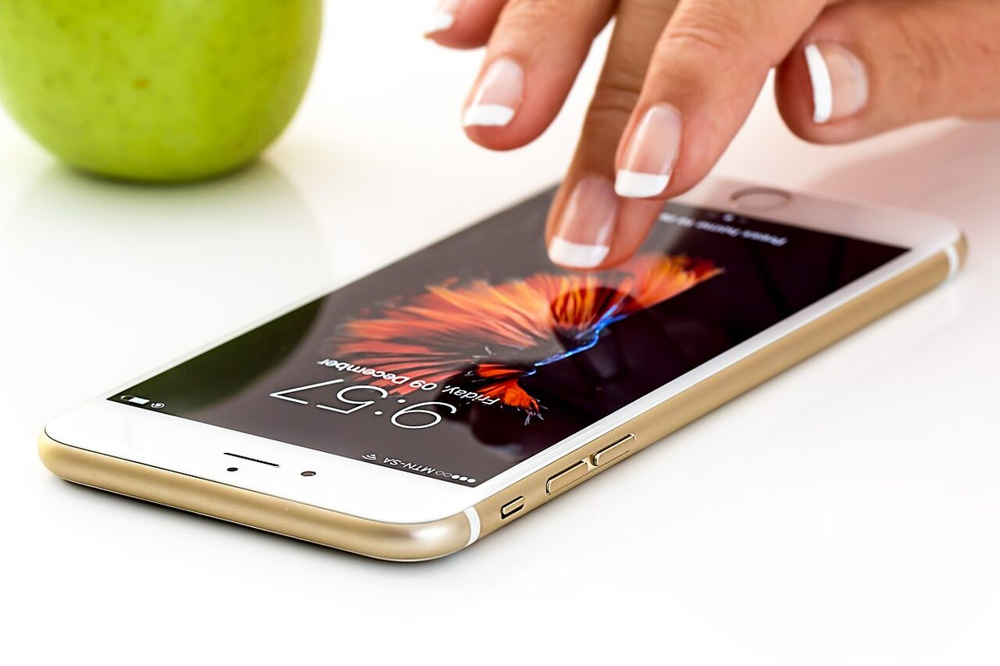

Foto liburan, foto anak, atau foto dokumen penting terhapus tidak sengaja. Jari kamu mungkin terpeleset saat membersihkan galeri, atau menghapus album karena mengira isinya sudah dicadangkan. Tenang dulu. Foto yang dihapus dari HP biasanya tidak langsung lenyap. HP modern menyimpannya sementara di folder sampah, dan kamu masih bisa mengembalikannya sebelum batas waktunya. Artikel ini memakai aturan yang berlaku per November 2026.
Kenapa foto yang dihapus belum tentu hilang
Waktu kamu mengetuk tombol hapus, HP tidak langsung membuang file fotonya. Sistem memindahkan foto itu ke tempat sampah dulu, seperti keranjang di komputer. Selama foto masih di sana, kamu bisa mengembalikannya utuh ke galeri, lengkap dengan album asalnya.
Batas waktunya hampir sama di semua HP. Halaman bantuan Google Foto menyebut foto dan video yang dihapus bertahan di Sampah selama 30 hari sebelum dihapus permanen. Apple menulis hal yang sama untuk iPhone: foto yang dihapus masuk album Baru Dihapus selama 30 hari, lalu hilang permanen. Samsung juga memberi batas 30 hari untuk Recycle Bin di aplikasi Galeri. Patokannya gampang diingat: kamu punya 30 hari sejak foto dihapus.
Foto hilang lebih cepat kalau kamu mengosongkan sendiri tempat sampahnya, atau mengetuk hapus permanen di dalam folder sampah. Kalau dua hal itu sudah terjadi, foto tidak bisa dipulihkan lagi lewat HP. Karena itu, langkah pertama setelah sadar foto terhapus adalah cek tempat sampah, bukan buru-buru memasang aplikasi pemulihan acak dari internet.
Cara mengembalikan foto di HP Android
Di Android, ada dua tempat sampah yang wajib kamu cek: Google Foto dan galeri bawaan HP. Foto yang sama bisa tersimpan di salah satunya, tergantung aplikasi mana yang kamu pakai untuk menghapusnya.
Cek Google Foto dulu, karena ini yang paling umum:
- Buka aplikasi Google Foto dan pastikan kamu masuk dengan akun Google yang sama seperti waktu foto itu diambil.
- Ketuk menu Koleksi atau Perpustakaan di bawah, lalu buka Sampah.
- Sentuh dan tahan foto yang mau dikembalikan, kamu boleh memilih beberapa foto sekaligus, lalu ketuk Pulihkan.
- Foto kembali ke galeri dan ke album tempatnya semula.
Kalau foto tidak ada di Google Foto, cek galeri bawaan HP. Di HP Samsung, buka aplikasi Galeri, ketuk ikon Menu berupa tiga garis, lalu pilih Sampah atau Recycle bin. Ketuk Edit atau sentuh dan tahan foto, pilih foto yang mau dikembalikan, lalu ketuk Pulihkan. Di HP merek lain, nama menunya bisa berbeda, tapi polanya sama: buka galeri, cari menu, lalu cari folder Sampah atau Baru Dihapus.
Yang sering bikin bingung: kamu menghapus foto dari galeri bawaan, tapi foto itu juga hilang dari Google Foto, atau sebaliknya. Itu wajar kalau pencadangan Google Foto aktif, karena penghapusan di satu tempat ikut berlaku di tempat lain. Justru karena itu, cek dua-duanya.

Cara mengembalikan foto di iPhone
Di iPhone, caranya lebih singkat: hanya ada satu tempat sampah utama, album Baru Dihapus di aplikasi Foto. Buka aplikasi Foto, gulir ke bawah sampai bagian Utilitas, lalu ketuk Baru Dihapus. Album ini dikunci, jadi iPhone akan meminta Face ID, Touch ID, atau kode sandi sebelum membukanya. Kuncian ini sengaja, supaya orang lain yang memegang HP kamu tidak bisa menghapus fotonya secara permanen.
Di dalam album, setiap foto menampilkan sisa hari sebelum dihapus permanen. Pilih fotonya, ketuk Pulihkan, lalu konfirmasi. Foto langsung kembali ke perpustakaan utama. Kalau mau mengembalikan semuanya sekaligus, ada tombol Pulihkan Semua. Apple menulis di halaman dukungannya bahwa kamu punya 30 hari untuk mengembalikan foto dari album ini.
Kalau kamu memakai iCloud Foto, cek juga lewat browser. Buka situs iCloud, masuk dengan akun Apple yang sama, buka Foto, lalu buka album Baru Dihapus di sana. Isinya sama dengan yang di HP, tapi cara ini berguna kalau HP kamu sedang tidak di tangan atau layarnya bermasalah.
Kalau foto sudah tidak ada di tempat sampah
Kalau foto tidak ada di folder sampah, jangan langsung menyerah. Masih ada beberapa tempat lain yang layak dicek sebelum kamu menganggap foto itu hilang.
Pertama, cek chat tempat foto itu pernah kamu kirim. Foto yang pernah kamu kirim lewat WhatsApp atau Telegram biasanya masih tersimpan di chat, selama pesan dan medianya belum dihapus.
Kedua, cek akun lain. Foto bisa tercadangkan ke akun lain, bukan akun yang sedang aktif di HP. Masuk ke Google Foto atau iCloud dengan akun lain yang kamu punya, lalu cari foto itu di sana.
Ketiga, cek salinan di tempat lain: laptop, kartu memori, flashdisk, atau HP lama yang belum dijual. Foto yang pernah kamu pindahkan ke laptop untuk diedit sering kali masih tersimpan di sana.
Jalan terakhir adalah aplikasi pemulihan data seperti DiskDigger di Android. Hasilnya tidak dijamin, dan aplikasi yang meminta izin berlebihan atau meminta bayaran di muka patut dicurigai. Kalau fotonya benar-benar penting, kurangi pemakaian HP dulu supaya datanya tidak tertimpa file baru, lalu minta bantuan teknisi tepercaya.
Supaya kejadian ini tidak terulang
Foto yang hilang memang bisa dipulihkan, tapi pencegahan tetap jauh lebih murah daripada pemulihan. Nyalakan pencadangan otomatis di Google Foto kalau kamu memakai Android, atau iCloud Foto kalau kamu memakai iPhone. Dengan pencadangan aktif, foto kamu tersimpan di akun cloud, jadi kalaupun HP hilang atau rusak, fotonya masih bisa diunduh di perangkat lain.
Sesekali, periksa apakah pencadangannya benar-benar jalan. Buka Google Foto, lihat status pencadangan di pengaturan, pastikan tidak ada tulisan pencadangan dijeda atau penyimpanan penuh. Banyak orang mengira fotonya tercadangkan, padahal pencadangannya sudah berhenti berbulan-bulan karena kuota penuh.
Untuk foto yang tidak tergantikan, simpan satu salinan lagi di luar HP. Pindahkan ke laptop atau harddisk eksternal setiap beberapa bulan. Dua salinan di dua tempat berbeda jauh lebih aman.
Foto yang terhapus tidak sengaja masih bisa kembali, asal kamu bergerak cepat dan mengecek tempat yang benar. Mulai dari tempat sampah Google Foto atau galeri bawaan di Android, atau album Baru Dihapus di iPhone. Ingat batas 30 harinya, dan jangan mengosongkan tempat sampah sebelum yakin tidak ada foto penting di dalamnya. Sesudah foto kembali, nyalakan pencadangan otomatis supaya kejadian yang sama tidak perlu kamu alami dua kali.
Sumber dan Info Resmi
Angka dan detail di artikel ini merujuk ke sumber berikut:
- Google Photos Help: foto dan video yang dihapus bertahan di Sampah selama 30 hari sebelum dihapus permanen; yang sudah dihapus permanen tidak bisa dipulihkan; pemulihan mengembalikan foto ke galeri dan album asalnya.
- Apple Support: foto dan video yang dihapus masuk album Recently Deleted selama 30 hari, sesudah itu dihapus permanen; album dikunci Face ID atau Touch ID; langkah pulihkan lewat tombol Recover.
- Samsung Support: foto dan video yang dihapus dari Galeri bisa dipulihkan dari Recycling Bin, wajib dipulihkan dalam 30 hari atau terhapus permanen; langkah Galeri, Menu, Recycling bin, Edit, pilih, Restore.
- Samsung Support: item yang dihapus bertahan di Bin selama 30 hari sebelum dihapus permanen otomatis.
- Wigatos: cara tiap HP berbeda antara galeri bawaan, Google Foto, dan iCloud.
- KapanLagi: langkah galeri bawaan Android dan album Recently Deleted iPhone.